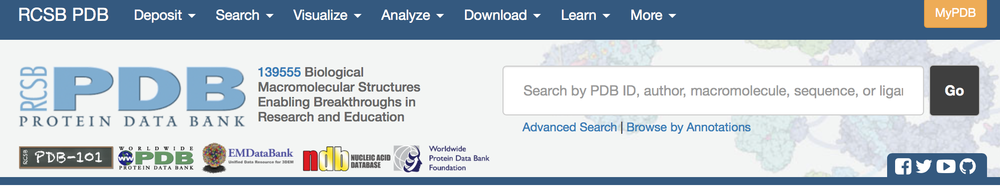
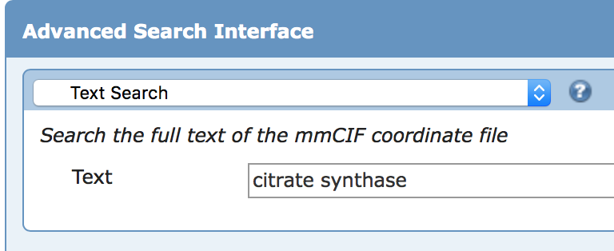
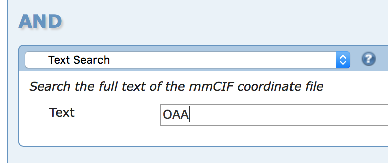
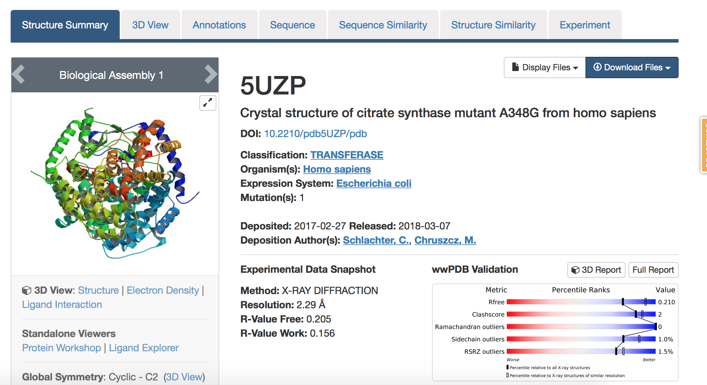

Step Three: Use PDB to find 3D protein structures
a)select advanced Search, under query type select text
enter the protein name in the first search field

PDB Website
-enter Citrate Synthase

b)click add search criteria and select text under query type
c)enter the three letter code corresponding to the ligand
-enter OAA

d)choose a protein structure with a bound ligand
-select 5UZP
